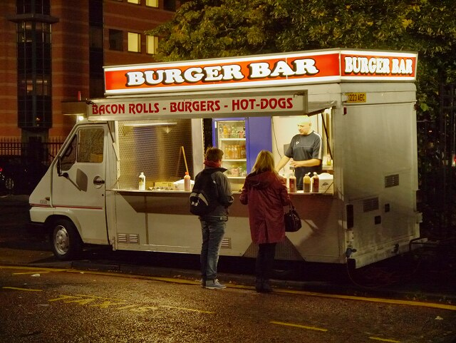
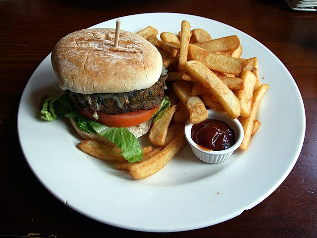
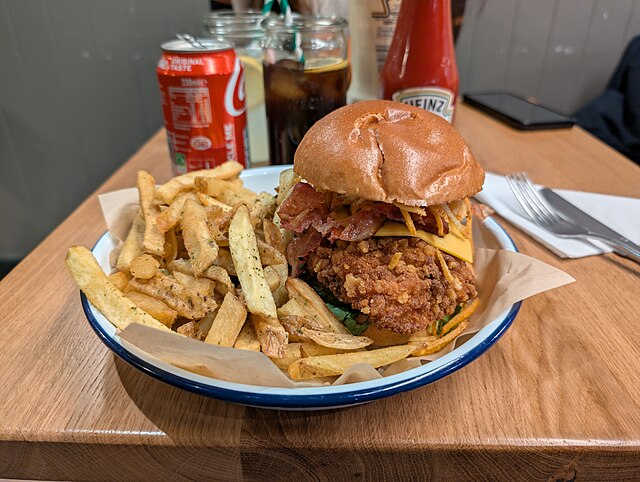
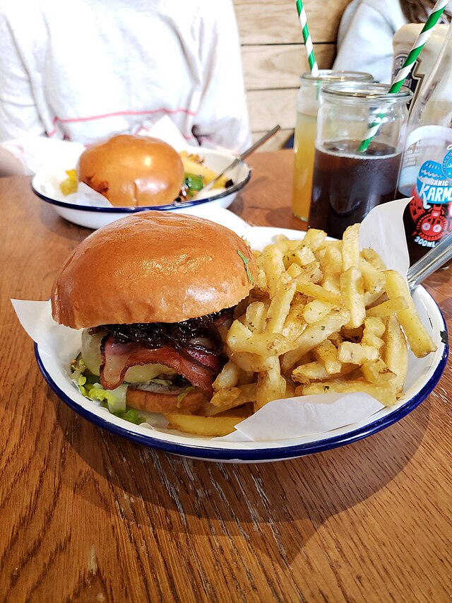

Back
The hamburger originated from 19th-century German immigrants bringing the "{Hamburg steak}" to America, which evolved into a patty served between bread around 1885–1904. Key inventors include Charlie Nagreen (1885), the Menches Brothers (1885), and Fletcher Davis, with the dish gaining mass popularity at the 1904 St. Louis World's Fair.
Key Historical Milestones
Ancient Roots: Minced meat dishes date back to the Mongols in the 12th century and ancient Roman cuisine.
18th-19th Century (Hamburg Steak): German immigrants brought "Hamburg steak" (chopped beef) to the US. In 1802, it was described as a salted, minced beef dish.
1885 (The "First" Burger Claims):
Charlie Nagreen: Sold a meatball between bread at the Seymour Fair, Wisconsin.
Menches Brothers: Claimed to substitute pork with beef at a fair in Hamburg, New York.
1891 (Oklahoma Claim): Oscar Weber Bilby is believed to have served the first, true hamburger on a yeast bun, a feat honored by Oklahoma's governor in 1995.
1904 (Popularization): The hamburger was introduced to a national audience at the St. Louis World's Fair.
1920s-1950s (Fast Food Era): White Castle (1921) pioneered the fast-food model. The cheeseburger emerged around 1924, followed by McDonald's (1948), Burger King (1954), and Wendy's (1969).
The Evolution of the
The hamburger is named after the city of Hamburg, Germany, as immigrants brought the "Hamburg steak" with them to the United States. The addition of the "bun" was a practical innovation for street vendors allowing customers to eat while walking, transforming a knife-and-fork meal into a convenient handheld food.




first photos are public domain
the last two photos were made by عمرو